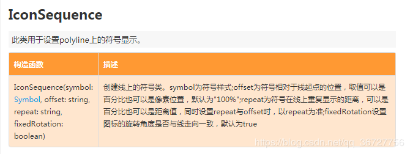
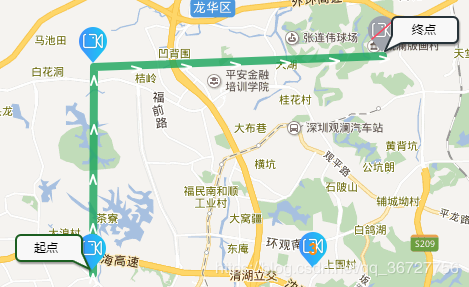

最近在开发百度地图时，需要绘制行人行走的轨迹，并在轨迹内使用箭头表示方向，和我们平常使用百度地图导航时一样，能通过箭头表示人行走的方向。
通过百度地图API，我们很容易能找到划线的方法Polyline() ，但我们该如何在绘制的线上，展示箭头方向呢？进一步查看百度地图API发现IconSequence类，此类用于设置polyline上的符号显示。
结合百度地图的API：

因此，我们就可以实现绘制带箭头方向的折线。
//创建地图
var map = new BMap.Map('map');
var point = new BMap.Point(114.065537,22.553321);
map.centerAndZoom(point , 13);
map.enableScrollWheelZoom();
//坐标点
Points=[
{lng: 114.014, lat: 22.687},
{lng: 114.0143, lat: 22.742},
{lng: 114.09746, lat: 22.745}
]
//绘制箭头及其样式
var sy = new BMap.Symbol(BMap_Symbol_SHAPE_BACKWARD_OPEN_ARROW, {
scale: 0.6,//图标缩放大小
strokeColor:'#fff',//设置矢量图标的线填充颜色
strokeWeight: 2,//设置线宽
});
var icons = new BMap.IconSequence(sy, '100%', '10%',false);//设置为true，可以对轨迹进行编辑
//绘制折线以及样式
var trackLine = new BMap.Polyline(potArr,{
strokeColor:"#18a45b",//设置颜色
strokeWeight:8 ,//宽度
strokeOpacity:0.8,//折线的透明度，取值范围0 - 1
enableEditing: false,//是否启用线编辑，默认为false
enableClicking: false,//是否响应点击事件，默认为true
icons:[icons]
});
map.addOverlay(trackLine);
效果如下图：

原文链接：https://blog.csdn.net/qq_36727756/article/details/89184935